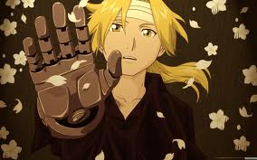
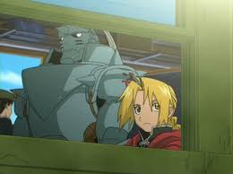

| Перейти до: |
Сталевий алхімік |
| -------------------------------------------------------------------------------------------------------------------------------------------------------------------------------------------------- Сталевий алхімік | Світ | Сюжет | Сюжет фільму | Сюжет манґи | Персонажі | Манґа | Аніме фільм та серіали | Музика | Популярність | ГАЛЕРЕЯ -------------------------------------------------------------------------------------------------------------------------------------------------------------------------------------------------- |
|
|
Сталевий алхімік Fullmetal Alchemist — популярна японська манґа, написана та ілюстрована Аракавою Хіромою. Вперше з'явилася в лютому 2003 року в журналі Monthly Shonen Gangan видавництва Square Enix та виходить по сьогодні. Аніме-адаптація, створена студією BONES, демонструвалася в Японії з 4 жовтня 2003 до 2 жовтня 2004 року. Фільм-продовження Сталевий алхімік: Завойовник Шамбали, створений тією ж студією, з'явився в кінотеатрах Японії 23 липня 2005 року. Крім аніме, за мотивами манґи створено серію новел, декілька OVA та відеоігри. «Сталевий алхімік» розповідає історію братів Едварда та Альфонса Елріків, які відправилися на пошуки філософського каменя, щоб повернути собі все, що вони втратили. Світ Сюжет серіалу розгортається у світі, який приблизно схожий на Землю початку XX ст.. Рівень технології, окрім робототехніки, приблизно відповідає рівню технології вищезгаданого періоду. Але разом з тим широко використовується алхімія — вид магії де діють закони фізики та хімії. Основним законом алхімії є Закон рівноцінного обміну — для отримання якоїсь речі треба прикласти рівнозначне зусилля. Алхіміки можуть перетворювати одні речовини в інші та змінювати форму речей. Найкращі алхіміки можуть скласти екзамен на звання Державного алхіміка. Це звання дає його власнику високий соціальний статус та гроші (доступ до спеціальних фондів). Державний устрій країни Аместріс, де відбувається дія серіалу, нагадує тоталітарну державу. Попри те, що в країні діє парламент, справжня влада зосереджена в руках армії. Головнокомандувач армії (фюрер) є також главою держави та практично нікому не підконтрольний. Сюжет  Брати Альфонсо та Едвард Елріки — діти, що живуть в невеликому містечку Райсембул. Їхній батько Світлий Хаенхайм — один з найталановитіших алхіміків — покинув їх, коли вони ще були дуже малі. Згодом від невиліковної хвороби помирає їхня мати. Випадково вони зустрічають відомого алхіміка Куртіс Ідзумі, яка погоджується стати їх вчителем алхімії. Після закінчення навчання вони повертаються назад та порушують найбільше табу в алхімії — намагаються воскресити свою померлу матір. Це призводить до того, що Едвард втрачає свої руку та ногу, а Альфонсо все своє тіло. Згодом Елрік, як найталановитіший з братів, вступає до армії та стає наймолодшим Державним алхіміком. Відтоді брати подорожують, щоб знайти філософський камінь, який, як вони вірять, зможе повернути їхні тіла. Але ситуація ускладнюється тим, що філософський камінь шукають не тільки вони, але і Гомункули — група людиноподібних істот, які несуть в собі частки Філософського каменя, які дозволяють їм зцілятися від практично будь-якої нанесеної рани. Згодом виявляється, що гомункулами керує талановитий алхімік Данте, яка бажає за допомогою філософського каменя знайти безсмерття. Сюжет фільму Мюнхен, 1923 рік. Два роки пройшло відтоді, як Едварда Елріка закинуло в наш світ. Позбувшись можливості застосовувати алхімію, Едварт весь цей час займався дослідженнями в області ракетної техніки разом з Альфонсом Хайдеріхом — молодою людиною, дуже схожою на його молодшого брата, — сподіваючись, що таким чином відшукає спосіб повернутися додому. Досі його сподівання виявлялися марні, але коли він дізнався, що Товариство Туле — окультистська група, близько пов'язана з нацистською партією, — виявила ключ до місцезнаходження легендарної містичної країни Шамбали, надії Едварда спалахнули з новою силою. Тим часом в своєму рідному світі Альфонс Елрік все глибше занурюється в таємниці алхімії, шукаючи спосіб возз'єднатися зі своїм старшим братом. Сюжет манґи Сюжети аніме серіалу та манґи збігаються до 26-ої серії аніме, потім між ними пролягає суттєва різниця. Це було викликано тим, що на момент створення серіалу Хірому Аракава не встигла намалювати достатню кількість томів манґи і сценаристи аніме писали сценарій без її участі. В манзі замість Данте гомункулами керує таємничий «Батько» — творець всіх гомункулів. Точні плани Батька невідомі, хоча головні герої підозрюють, що він збирається використати все населення країни Аместріс як гігантський алхімічний круг для створення Філософського Каменя, але гомункул Заздрість натякає, що це ще не вся правда. Персонажі Едвард Елрік — надзвичайно обдарований алхімік, здатний здійснювати перетворення без допомоги алхімічного кола. Він пройшов іспит на звання державного алхіміка в 12 років, ставши таким чином наймолодшим зі всіх, хто коли-небудь отримував цей статус. Тоді ж він отримав від самого головнокомандувача друге ім'я — Сталевий Алхімік. Руку і ногу він втратив, спробувавши воскресити матір за допомогою алхімії. Його мета — відшукати філософський камінь, щоб повернути собі і братові колишні тіла. Ед сильний духом хлопець, що ніжно любить свого брата, проте активно маскує це за грубістю. Цілеспрямований і рішучий, він вірить в те, що повинен повернути тіло своєму братові за будь-яку ціну. Комплексує через свій маленький зріст, завжди бурхливо реагує на будь-які зауваження і жарти на цю тему. Едвард глибоко зневажає свого батька — Хоенхайма, який покинув сім'ю, коли брати були ще зовсім малі. Едвард звинувачує батька в смерті матері, яка дуже страждала після його зникнення. Альфонсо Елрік — молодший брат Едварда. Його часто приймають за старшого Елріка — знаменитого Сталевого алхіміка, бо на вигляд він здоровенний чоловік, одягнений в залізний обладунок. Небагато знають, що насправді обладунок порожній усередині. Коли брати спробували за допомогою алхімії воскресити свою матір, Ал втратив своє справжнє тіло, але Едвард встиг прикріпити його душу до старовинних обладунків за допомогою алхімічного кола, написаного власною кров'ю. Якщо коло зітреться, Ал загине. М'якість і чуйність Ала врівноважує навіженство його старшого брата, що рятує їх від багатьох неприємностей. Ал не менш досвідчений в алхімії, чим Едвард, проте в майстерності все ж поступається йому. Уінрі Рокбелл — першокласний механік. З дитинства знайома з Елріками. Вперше вона злякалася їх занять алхімії, але пізніше звикла, хоча вони їй про багато що не розповідали. Її батьки були лікарями. Загинули під час Ішварського повстання. Вона, разом зі своєю бабусею, створила автоброню Едварда, і займається їх лагодженням після отриманих Едом пошкоджень. Після битви братів в п'ятій лабораторії, приїжджає до них в столицю і постійно знаходиться з ними, турбуючись про їх стан. Манґа  Манґа Сталевий алхімик написана та іллюстрована Аракавою Хіромою. Вперше манґа з'явилася в січні 2001 року в журналі Monthly Shonen Ganganвидавництва Square Enix і виходить до сих пір. Видавництвом Square Enix епізоди публікуються в форматі танкобону. Перший том вийшов в січні 2002 року і на сьогодні вийшло 20 томів. Компанія Viz Media ліцензувала манґу для випуску в Північній Америці. Перший том вийшов в травні 2005 року і на сьогодні вийшло 16 томів. Англійська версія манґи майже нічим не відрізняється від оригінальної, крім сцени розп'яття гомункула Жадібність у восьмому томі. В оригінальній версії його розіп'яли на кам'яному хресті, в той час як в англійській версії хрест перетворився просто на кам'яну брилу. Viz Media вдалася до цих змін, щоб уникнути асоціацій з християнством. Дозвіл на ці зміни був наданий Аракавою Хіромою. У Сінгапурі манґа випускається видавництвом Chuang Yi англійською та китайською мовами. Англійською випущено вже шістнадцять томів, китайською — чотирнадцять. У Польщі манґа випусається видавництвом JPFantastica. Вийшло вже одинадцять томів. В Бразилії манґа видається компанією Editora JBC. На сьогодні вийшло 34 томи, які відповідають сімнадцяти томам оригінальної манґи. У Франції манґа видається французьким відділеням япоського видавництва Kurokawa. Вийшло п'ятнадцять томів, восьмий том, що вийшов у вересні 2006 року, продається у двох варіантах: простому та з гумористичною новелою Палаючий алхімік, в якій головним героєм виступає Рой Мустанґ. Ця новела доступна також в обмеженному виданні шостого тому оригінальної манґи. Аніме фільм та серіали Анімаційна студія BONES, у співробітництві з компаніями Mainichi Broadcasting System та Aniplex, адаптувала манґу в 51-серійний аніме-серіал. Прем'єра телесеріалу відбулась з 2 по 4 жовтня 2004 року на японських телеканалах Mainichi Broadcasting System, TBS та Animax. 6 листопада 2004 року серіал був показаний компанією Adult Swim на супутниковому телеканалі Cartoon Network з англійськими субтитрами. Через півтора року, 3 березня 2006 року серіал з'явився на канадському телеканалі YTV. Сюжети аніме та манґи суттєво відрізняються. Це було викликано тим, що на момент створення серіалу Хірому Аракава не встигла намалювати достатню кількість томів манґи і сценаристи аніме писали сценарій без її участі. Під час створення серіалу, автор манґи лише консультував сценаристів BONES. Продовження серіалу — повнометражний фільм Сталевий алхімік: Завойовник Шамбали, створений тією ж студією, вийшов 23 липня 2005 року. Також студією BONES була створена серія OVA. В додаток до OVA, був знятий короткий ролик з живими акторами. В березні 2006 року DVD-диск з OVA та роликом з'явився в Японії під назвою Сталевий алхімік: Преміум колекція. Всі тринадцять DVD-дисків з серіалом, а також фільм були випущені в Північній Америці. Спеціальна версія фільму вийшла обмеженим накладом14 листопада 2006 року. Компанія MVM випустила перші вісім DVD-дисків в Великобританії. В 20-тому томі манґи Аракава анонсувала, що ремейк серіалу вже в стадії розробки. До цієї заяви вже з'являлись чутки, що BONES знімає другий сезон. 2 лютого 2009 року BONES опублікував перший ролик з нової екранізації. Прем'єра Fullmetal Alchemist: Brotherhood відбулась 5 квітня 2009 року на японському телеканалі MBS-TBS. Музика Автор всієї музики Суцільнометалевого алхіміка — япоський композитор Осіма Мітіру. За музичний супровід повнометражного фільму Сталевий алхімік: Завойовник Шамбали Осіма отримав нагороду на 5-тому Tokyo Anime Award в категорії «Найкраща музика». Перший саундтрек-альбом до аніме-серіалу TV Animation Fullmetal Alchemist Original Soundtrack 1 вийшов в Японії 24 березня 2004 року. В альбом входять 33 трека, як фонова музика так і відкриваюча та закриваюча композиції. Другий альбом TV Animation Fullmetal Alchemist Original Soundtrack 2 вийшов 15 грудня 2004 року, та включає в себе 30 композицій. Третій альбом TV Animation Fullmetal Alchemist Original Soundtrack 3 вийшов 18 травня 2005 року і включає в себе 27 копозицій. Альбоми Fullmetal Alchemist — Complete Best та Fullmetal Alchemist Hagaren Song File -Best Compilation- — вибірка найкращих копозицій серіалу. Перший альбом вийшов в Японії 14 жовтня 2004 року, а другий — 21 грудня 2005[71]. Саундтрек-альбом до повнометражного фільму Fullmetal Alchemist The Movie Conqueror Of Shamballa OST, куди входить 47 композицій, вийшов 21 грудня 2005 року. В грудні 2004 року в Токіо та Осаці відбувся фестиваль Tales of Another Festival, де виступало багато акторів з Алхіміка. DVD-диск Fullmetal Alchemist Festival — Tales of Another, який включає в себе композиції з цього фестивалю, вийшов в Японії 27 квітня 2005 року. Популярність В Японії станом на березень 2008 року манґа була продана тиражем більше 30 млн томів. Серіал увійшов в список найуспішніших ліцензій Viz Media, а також декілька разів з'являвся в списку USA Today Booklist. Англійський реліз першого тому манґи увійшов в список найкраще купованих в 2005 році. Разом з Yakitate!! Japan, манґа Сталевий алхімік була визнана на 49-тій церемонії Shogakukan Manga Award, найкращою сьонен манґою 2004 року. У 2003 році японський журнал Animage визнав Fullmetal Alchemist найкращим аніме 2003 року. В 2005 та 2006 році телеканал TV Asahi визнав «Сталевого алхіміка» найкращим аніме усіх часів. У 2005 році Fullmetal Alchemist став найкращим аніме серіалом за версією журналу Anime Insider. У 2007 році Fullmetal Alchemist виграв в 5 номінаціях із 6-ти на American Anime Awards (Найкращий серіал, Найкращий актор, Найкращий кастинґ, Найкращий дизайн DVD-боксу та Найкраща музична тема), став єдиним аніме яке отримало таку кількість нагород. Сталевий алхімік разом з Final Fantasy та Dragon Quest став найуспішнішою торговою маркою компанії Square Enix. |
|
| ---------------------------------------------------------------------------------------------------------------------------------------------------------------------------------------------------------------------------- Сталевий алхімік | Світ | Сюжет | Сюжет фільму | Сюжет манґи | Персонажі | Манґа | Аніме фільм та серіали | Музика | Популярність | ГАЛЕРЕЯ ---------------------------------------------------------------------------------------------------------------------------------------------------------------------------------------------------------------------------- |
|